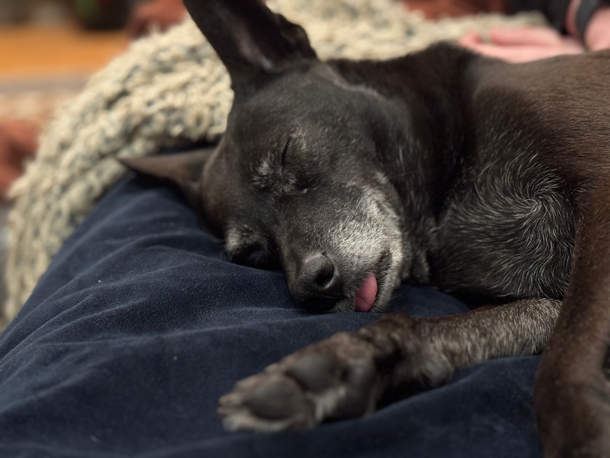

Hi, I'm Michael Crismali
Full Stack Software Engineer
13 years of experience, currently freelancing in Chicago.
Professional
I've worked across the full stack throughout my career, with a focus on JavaScript/TypeScript, Ruby on Rails, React, and React Native. I'm comfortable with the whole picture — from database design to UI — and I care about writing code that's maintainable and well-tested. I currently work through Semicolon Design Group.
A few things I'm proud of: I volunteer as a developer for the Chicago Tool Library, spoke at RailsConf 2018, and have contributed to open source through projects like MagicLamp, FantaskSpec, and JsonbAccessor. You can find more of my work on GitHub.
Personal
When I'm not working I'm usually wandering or biking around Chicago, watching movies, going to concerts, or reading comic books. I make ice cream at home and I'm slowly learning Italian. I live with my wife and our 14-year-old dog, who has strong opinions about nap schedules.

Contact
Interested in working together? Feel free to reach out.